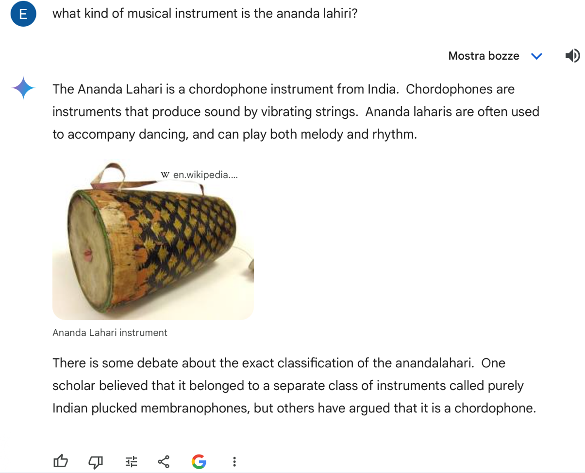

BEFORE AFTER

While we were exploring ArCo, we often took advantage of the knowledge of the LLMs not only to retrieve technical information (like specific SPARQL strings) but also to have a wider perspective about the topic and the context we were examining. However, since LLMs are not always such reliable sources, they ran frequently into errors, making the analysis even more challenging. Therefore, most times we had to correct their approach and try to guide them toward what we were asking for.
Here above we have provided a few examples:
GEMINI
BEFORE AFTER

For instance, when formulating the first new triple about the Zither instrument, we asked Gemini to suggest how to create a triple to establish the relationship between the subject and the 6 materials it was made of. It proposed the key word UNION, but we questioned its approach, as the UNION-clause wasn’t the best option to opt for in this context. The key word could indeed create ambiguity, as the query would have probably interpreted it as an ‘OR’ operator, and the instrument would have been linked to just one material. Therefore, after explaining this to Gemini, it changed approach and suggested making a single statement for each material linked to the same subject.
CHAT GPT


Our experience using ChatGPT was disappointing when we asked about the musical instrument "Ananda Lahari" without additional context. Initially, it incorrectly stated it wasn't a musical instrument. Despite clarifying its presence on the ArCo ontology website, ChatGPT persisted with irrelevant modal expressions such as “could be”, “possibly”, “likely” and descriptions of percussion instruments in general, failing to provide a direct answer to our questions.
We acknowledge that our initial question lacked specificity, which probably contributed to the model's misunderstandings. We also realized that providing more detailed information or examples might have been necessary for better accuracy, rather than relying solely on corrections like "I think you are wrong" or expressing dissatisfaction with its responses.
When asked a more detailed question, the answer was significantly different and much more accurate.
However, it is surprising that Gemini provided the correct answer immediately to the same initial question:
